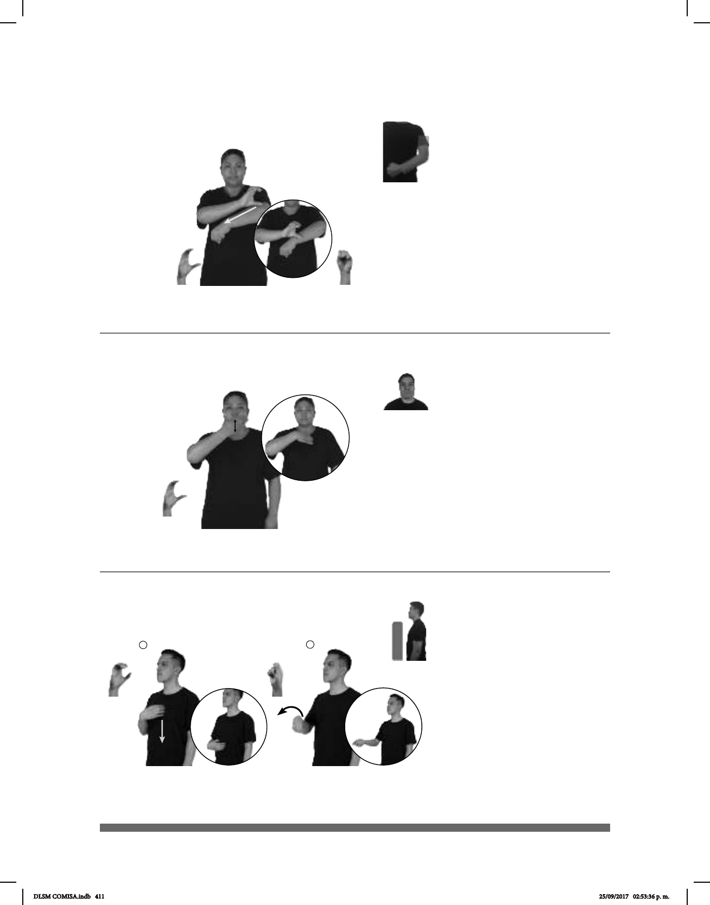

411
Seña: SB
MD C.1, MB S.1
MD palma hacia la
izquierda, MB palma hacia abajo.
MD de la sangradura a
la muñeca de la MB. MB a la altura
del pecho.
Recto.
Estación del STC Me-
(C-46)
10 MAÑANA NOS-VEMOS METRO CHABACANO
Nos vemos en el metro chabacano a las 10 de la mañana.
Seña: SM
C.1
La palma inicia hacia
adentro y termina oblicua hacia adentro y
hacia abajo.
De la nariz al cuello.
La muñeca se mueve
formando un arco hacia abajo.
1. sust. m. Estación del STC
Expresidente de México cuya
administración se dio de 1934 a 1940.
3. sust. m. stación del STC Metro de la
línea 9.
(C-47)
1
2 3
___muy
METRO CHABACANO CERCA pos-MI CASA
El metro Chabacano está muy cerca de mi casa.
1
2
Seña: SC: I. y II. SM
Q
I. Palma hacia adentro; II.
La palma inicia hacia la izquierda y
termina hacia arriba.
I. Sobre el pecho y se
desliza hacia el abdomen; II. A la altura
del abdomen.
I. Recto hacia abajo; II. La
muñeca gira y cambia la orientación de
la mano.
francés que es conocido por su trabajo
sobre la cultura sorda.
(C-48)
CHARLES-MICHEL-L´ÉPÉE
derecha
PADRE SORDO
área
Charles-Michel de l’Épée es el “Padre de los Sordos”.
DLSM COMISA.indb 411 25/09/2017 02:53:36 p. m.